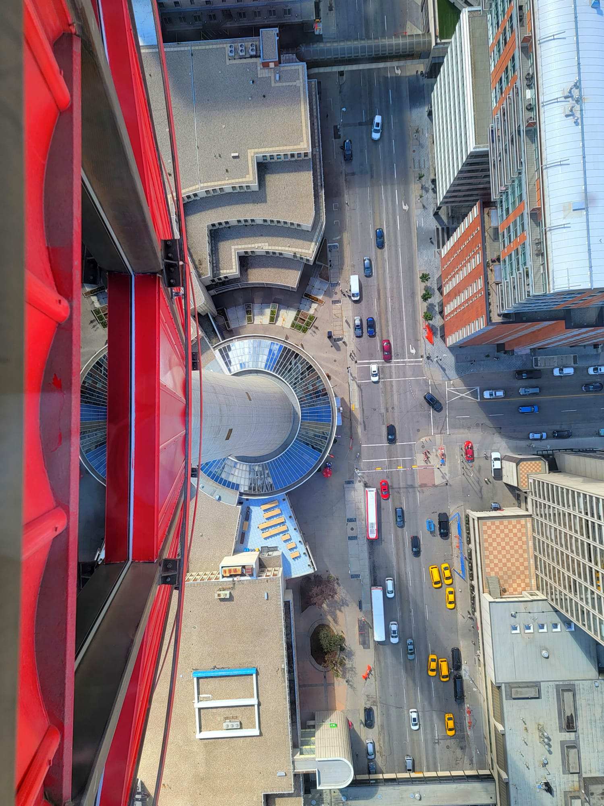

Photography - Capturing Moments
Photography is one of my favorite hobbies. I enjoy capturing beautiful moments, landscapes, and candid shots of people. It allows me to express my creativity and see the world from different perspectives.
Why I Love Photography
- It helps me capture memories and preserve them forever.
- It allows me to explore and appreciate the beauty in everyday life.
- Photography is a great way to express creativity and storytelling.
- It encourages me to travel and discover new places.
My Photography Gear
Here are some of the tools I use for my photography:
- Camera: Canon EOS R6 - a versatile mirrorless camera.
- Lenses:
- Canon RF 24-70mm f/2.8L IS USM
- Canon RF 50mm f/1.2L USM
- Smartphone Camera: Samsung Galaxy S23+
- Primary Camera: 50 MP (wide), with f/1.8 aperture, PDAF, and OIS
- Ultra-Wide Camera: 12 MP, f/2.2, 120° field of view
- Telephoto Camera: 10 MP, f/2.4, 3x optical zoom
- Front Camera: 12 MP, f/2.2, wide-angle for selfies
- Features: 8K video recording, Super HDR, and advanced night photography modes.
- Tripod: Manfrotto Befree Advanced Carbon Fiber Travel Tripod.
- Editing Software: Adobe Lightroom and Photoshop.
Photo Gallery
Here are some of my favorite shots:
